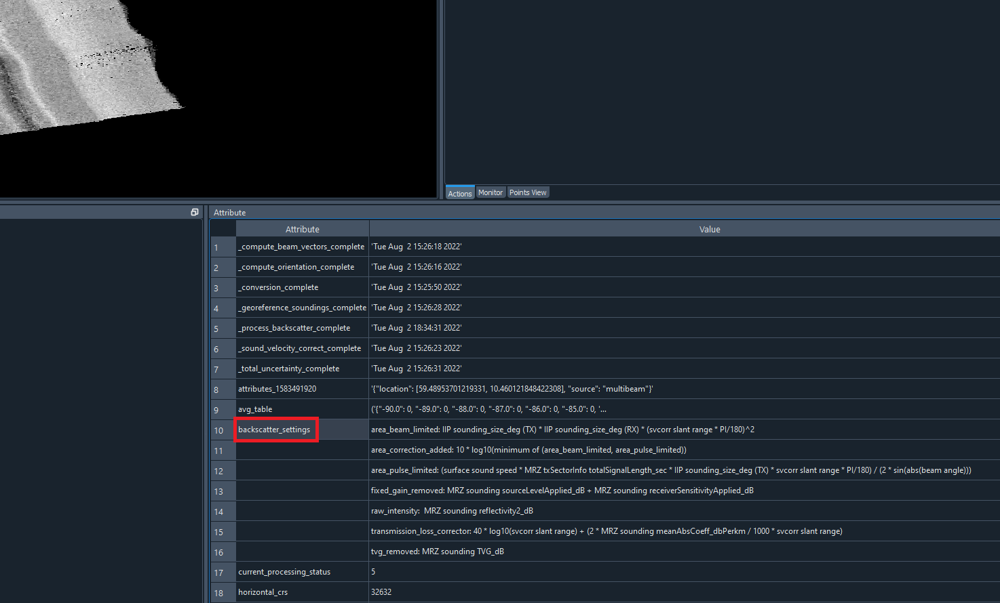

Backscatter¶
NOTE: Backscatter processing is EXPERIMENTAL and the values will change as future updates are released.
Added in Kluster 1.1, we can now generate processed backscatter and backscattter mosaics. For more on the theory and background of backscatter processing, i’ll link to the Geohab Backscatter Working Group site which hosts publications that explain the concepts in detail. In particular, I recommend the ‘Backscatter measurements by seafloor-mapping sonars: Guidelines and Recommendations (2015)’.
In essence, Kluster will (post v1.1) now include raw backscatter intensity from the sonar manufacturer, as well as any new variables that help with processing. Processing backscatter will involve removing the manufacturer specific gains and adding in correctors based on the Kluster multibeam processing that should produce ideal backscatter strength estimations for the seafloor.
Overview¶
Let’s look at how to use this module in Kluster. With a converted data instance selected, let’s go to Process - New Mosaic.

Mosaic generation consists of three steps:
Process Backscatter - Generate a new processed ‘backscatter’ variable (i.e. folder in your converted data folder) from the ‘raw reflectivity’ that we converted from the raw multibeam files. After running this process, you can compare the two using the Basic Plots tool. This is not gridded yet (i.e. a mosaic) but it is now ready to be used in gridding.
{kind=link}
AVG Corrector - The processed backscatter has a built in angular dependence to it (i.e stronger at nadir and weaker in the outer beams). This is ok for some applications, but is not ideal when we make a gridded product. Ideally we want all values normalized to a specific angle, so that all values align in the mosaic regardless of angle. AVG Corrector, if checked, will correct for this angular dependence. We basically always want this checked if we are creating a mosaic.
Create Mosaic - The final step in mosaic generation is to actually create the mosaic. We use the processed backscatter and the AVG Corrector (if checked) to build a processed backscatter mosaic, with the given resolution/method.
The recommended process is to leave all values as default.
The result of the process is a new backscatter mosaic that is available under Surfaces in the Project Tree. Select the intensity layer to view the gridded backscatter data. You can right click on the surface name to adjust the ‘Properties’ to change the display of the grid or select ‘Manage’ to see some other useful utilities.

About AVG Correction¶
So how does this correction actually work? First, we need two parameters, bin size and reference angle. With these two parameters, we can take a subset of your dataset, and build a lookup table of angle to corrector.
For example, with a sonar that has beams from -70 to 70 degrees in a swath, with a bin size of 1 degree and a reference angle of 45 degrees, we:
Build bins for all angles (70 deg, 69 deg, 68 deg, etc.)
Calculate the average backscatter for all beams in all bins (70: 1.234, 69: 5.235, etc.)
Find the bin nearest the reference angle (45 for us, let’s say at 45 deg the binned average is 5.0)
Return a table with the binned value minus the reference value (70: 1.234 - 5.0, 69: 5.235 - 5.0, etc.)
This table is then saved to each converted data container as the avg_table attribute. You can see this in the Attribute window in Kluster:

The table is applied to the backscatter during the Create Mosaic process. You don’t have to recreate this each time you run New Mosaic, to use an existing AVG table, select ‘Use Existing’ in New Mosaic.
Settings¶
After running ‘Process Backscatter’, Kluster will save a table of processing settings detailing the correctors applied. This table will show the formulae and the data used during processing, often in manufacturer specific terms. This exists primarily for advanced users who wonder what ‘fixed gain’ might mean with respect to a given sonar. You should be able to use this table to better understand and possibly recreate to some degree, the corrections applied.
{kind=link}